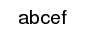

- Index
 ImageMagick Examples Preface and Index
ImageMagick Examples Preface and Index
- Known and Fixed Bugs Index
Note: Drawing Percent Characters is no longer a issue in IM, as percent
'
%' escapes were completely removed from all operators except
"
-annotate" for
drawing text, and "
-label" for "
monatge" labels.
This page is for reference for older IM users who may still have to deal with
this bug. The examples on this page have not been re-created when/if the bug
was fixed.
A Percent Problem
The percent character '
%' presents a different problem. If you
just use it, most likely it will draw onto the image just as you would expect.
convert -size 250x50 xc:none -box white -pointsize 20 -gravity center \
-draw 'text 0,0 " 97% "' \
-trim +repage -bordercolor white -border 5x0 draw_percent_ok.gif
| |
![[IM Output]](draw_percent_ok.gif)
|
But if you follow the percent character by certain special characters like
'
d' the percent and that character disappears.
convert -size 250x50 xc:none -box white -pointsize 20 -gravity center \
-draw 'text 0,0 " abc%def "' \
-trim +repage -bordercolor white -border 5x0 draw_percent_bad.gif
| |

|
The problem is that in the 'C' programming language "
%d" is used
for special purposes. so replaces the character sequence with something else,
in this case nothing. This could probably be regarded as a
bug.
The work-a-round was to replace all drawn text percent symbols with two such
symbols, EG "
%%'.
convert -size 250x50 xc:none -box white -pointsize 20 -gravity center \
-draw 'text 0,0 " abc%%def "' \
-trim +repage -bordercolor white -border 5x0 draw_percent_fixed.gif
| |
![[IM Output]](draw_percent_fixed.gif)
|
![[version image]](version.gif)
{kind=link}